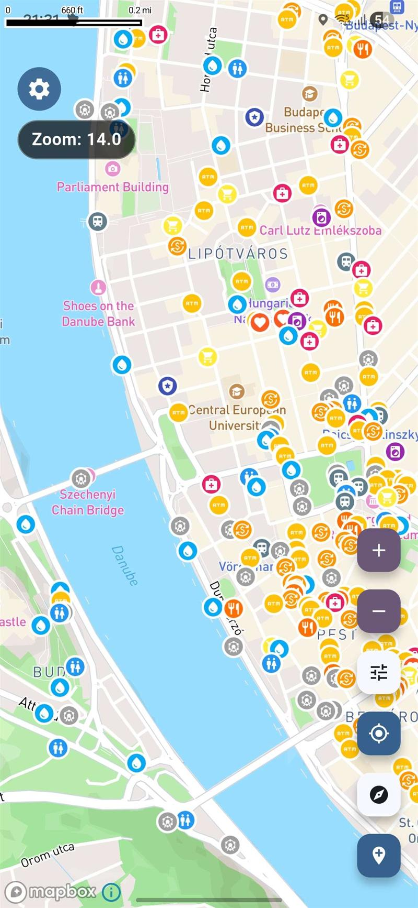
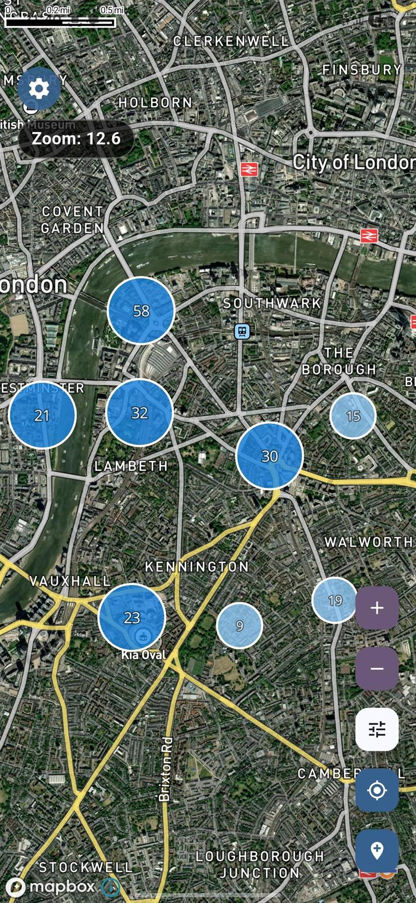

Trouve des toilettes, de l'eau, des douches et du Wi-Fi, où que tu ailles.
Voyager Maps t'aide à trouver les endroits dont tu as vraiment besoin quand tu voyages — toilettes, eau potable, Wi-Fi, laveries — surtout quand tu es dans un endroit que tu ne connais pas.
Gratuit · iOS et Android
5,5 millions de lieux pratiques · 237 pays · gratuit

Pourquoi ne pas simplement utiliser Google Maps ?
Google Maps, c'est super pour s'orienter. Mais pour les ressources communautaires gratuites — toilettes, points d'eau, douches —, les résultats sont mitigés. Voyager Maps a été conçue justement pour ces moments-là.
Exemple basé sur Paris, en France (juillet 2026) : chiffres de Voyager Maps issus de notre base de données, chiffres de Google Maps issus d'une recherche manuelle pour la même catégorie.
Pourquoi Voyager Maps a été créée
La plupart des applications de cartographie te permettent surtout de te rendre quelque part. Voyager Maps, elle, te propose ce dont tu as besoin une fois sur place : un moyen rapide de trouver les lieux pratiques qui facilitent ton voyage.
Les voyageurs se retrouvent tout le temps dans des situations comme celles-ci :
- Tu arrives dans une nouvelle ville et tu as besoin de trouver rapidement des toilettes ou une connexion Wi-Fi.
- Tu roules sous la chaleur et tu as juste besoin de remplir ta bouteille d'eau.
- Ça fait des jours que tu voyages et tu as besoin d'une laverie ou d'une douche.
- Tu es dans un endroit que tu ne connais pas et tu veux juste connaître les quelques endroits qui comptent vraiment.
Grâce aux filtres et aux catégories, tu ne vois que les lieux qui t'intéressent, sans être gêné par des résultats qui ne te concernent pas.
Conçue pour les situations réelles de voyage
Trouve plus facilement de l'eau potable et des toilettes, sans dévier de ton itinéraire.
Réponds facilement à tes besoins quotidiens, sans résultats hors sujet ni longues recherches.
Réponds rapidement à tes besoins pratiques, où que tu sois — sans avoir à deviner.
Organise ton parcours en fonction des points d'eau potable gratuits plutôt que de gaspiller ton argent en bouteilles.
Ce que tu peux trouver partout dans le monde
- Toilettes520k
- Eau potable459k
- Places de parking1,2M
- Consignes à bagages1,8k
- Camping et douches228k
- Supermarchés493k
- Argent et change261k
- Pharmacies437k
- Santé et urgences544k
- Attractions248k
- Autres étapes utiles1,1M
Le Wi-Fi n'est pas une catégorie à part entière : 389 000 de ces lieux proposent une connexion Wi-Fi gratuite ou réservée aux clients, et tu peux filtrer tes résultats en fonction de ce critère parmi tous ces lieux.
Des catégories pratiques que les gens recherchent vraiment quand ils sont en déplacement.
Bien plus que trouver la prochaine étape
Les lieux que tu trouves peuvent devenir un itinéraire que tu peux conserver, partager et dont tu peux calculer le coût — ce qu'une appli de cartographie classique te laisse faire toi-même.
Enregistre les lieux que tu trouves comme étapes, dans l'ordre où tu vas les visiter, avec les horaires et des notes.
Envoie un lien ou ajoute des compagnons de voyage pour que tout le monde suive le même itinéraire.
Indique un coût estimé pour chaque étape et découvre le total par devise — super pratique quand ton voyage te fait passer d'un pays à l'autre.
Ajoute n'importe quel endroit à tes favoris et il sera accessible en un seul clic, pendant ce voyage et les suivants.
Une expérience simple, des décisions rapides
Voyager Maps propose une interface cartographique épurée et des catégories de voyage ciblées, ce qui te permet de repérer rapidement les options à proximité et de choisir ta prochaine étape en toute confiance.


Tous les lieux pratiques dont tu as besoin — où que tu ailles.
Installe Voyager Maps et trouve plus vite ce dont tu as besoin, où que ton voyage te mène.
Foire aux questions
Oui, Voyager Maps est entièrement gratuite sur iOS et Android. Il n'y a ni abonnement ni achat intégré.
Voyager Maps répertorie plus de 5,5 millions de lieux pratiques dans le monde entier, notamment des toilettes publiques, des points d'eau potable, des douches gratuites, des points Wi-Fi, des laveries, des parkings et bien plus encore.
Voyager Maps est une appli pratique pour les voyageurs qui te permet de trouver des lieux utiles quand tu es en déplacement : toilettes, points d'eau potable gratuits, douches, laveries et Wi-Fi. Elle est conçue pour les voyageurs, les amateurs de road trips, les routards, ceux qui vivent en van et les cyclistes.
Google Maps, c'est super pour la navigation et les restos. Voyager Maps se concentre exclusivement sur les besoins pratiques des voyageurs : toilettes publiques, eau potable gratuite, douches, laveries et parkings. L'appli répertorie bien plus de lieux dans ces catégories — à Paris, par exemple, on en compte 289 points de ravitaillement en eau potable, contre une vingtaine sur Google Maps.